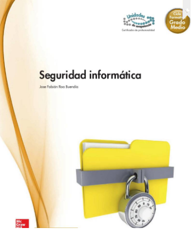

Libros de Seguridad Informatica
| Numero de Libro | Descripción | Imagen | Bibliografia | Url |
|---|---|---|---|---|
| Libro N° 1 | Introducción a la seguridad Informatica | Escrivá, G. G., Romero, S. R. M., & Ramada, D. J. (2013). Seguridad informática. Madrid, ES: Macmillan Iberia | url1 | |
| Libro N° 2 | Conceptos de la seguridad informatica |  | Roa, B. J. F. (2013). Seguridad informática. Madrid, ES: McGraw-Hill España. Recuperado de | url1 |
| Libro N° 3 | Hacking desde Cero | Libro Digital totalmente Gratis | url1 |